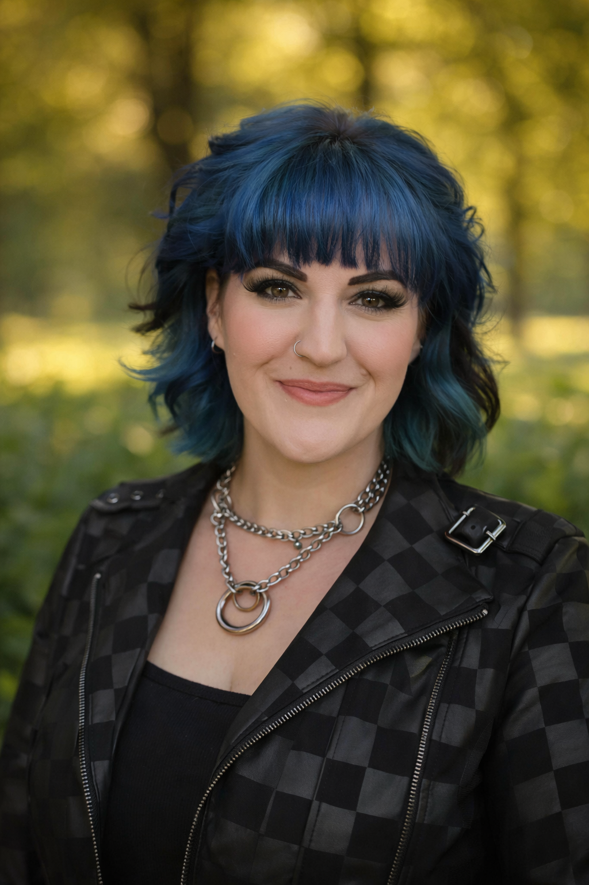

About

Cooking came to me through self-teaching, and photography through a long practice of learning to really see the world around me. Spending time noticing light, texture, and small shifts in a scene changed the way I approached both. Over time, the two stopped feeling separate. They began to overlap in quiet ways, in how I plate, how I notice color, and how I think about composition. Both come down to patience, attention, and a creative eye for detail.
Right now I’m in culinary school, working toward a professional skillset while continuing to build my photography under Soul & Horizon. In the kitchen, I’m focused on fundamentals like knife work, organization, and consistency, and learning how to move with intention in a shared space. Outside of it, I’m continuing to develop the visual side of my work, paying attention to how food exists not just as something to eat, but something to frame, style, and communicate.
Alongside that, I bring a background in administrative and operational work, the kind of behind-the-scenes structure that keeps things running. It’s shaped how I work more than anything. I stay organized, manage time carefully, and pay attention to details that aren’t always visible but matter to the outcome.
I’m based in Sonoma County and the greater Bay Area, and the place shapes everything I make. Seasonal food, local sourcing, and the landscapes and wildlife I live among all influence both what I cook and how I see. What draws me most is where cooking and image meet, and how food photography and styling can bring those two practices into the same frame in a way that feels natural and intentional.